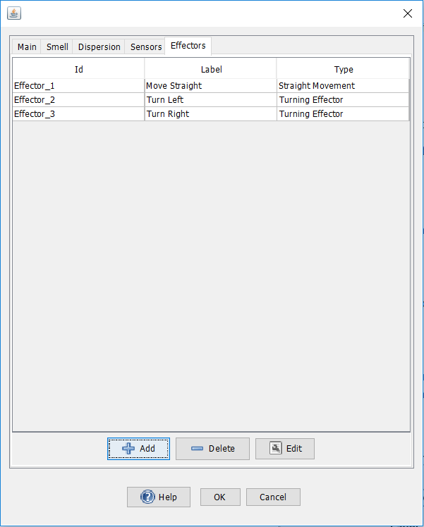
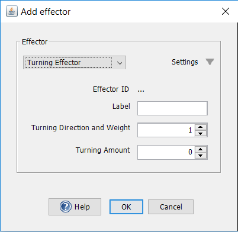
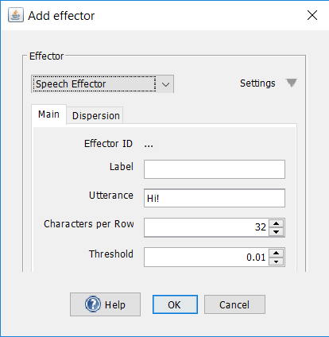

Effectors
An agent in Odor World has effectors that it uses to move, speak and eventually perform other actions. Animals accomplish this through muscle movement that allow them to run, swim, glide and, in the case humans, speak. Effectors are coupled with output neurons in neural networks. When these neurons get activated, the agent performs the action associated with the effector.To display an agent's effectors, double click on the agent in Odor World and select the effectors tab. The effector panel lists all of an agent's effectors along with its effector type and label. Labels can be renamed by double clicking on the label column.

A
straight effector moves the agent straight forward in Odor World. As
long as the neuron coupled with the effector is active, the agent will
continue to try to move directly forward in Odor World. The distance that the
agent moves per time step is the product of the activation in the
neuron and the base movement amount.

Controlled turning in organisms are accomplished by coordination of
various muscle groups. The turning effector is much simpler. The
direction that the agent faces is determined
by a function of turning direction and turning amount.

Turning direction: Determines
the direction of that the agent turns to. A positive value makes the
agent left. A negative value makes the agent turn right.
Humans utilize a variety of muscle groups to speak.
A simplified model of this is simulated by speech effectors in Odor
World. When a speech effector is activated, it activates hearing sensors of the same utterance.

Threshold: The amount of activation in a neuron above which the speech effector gets activated.